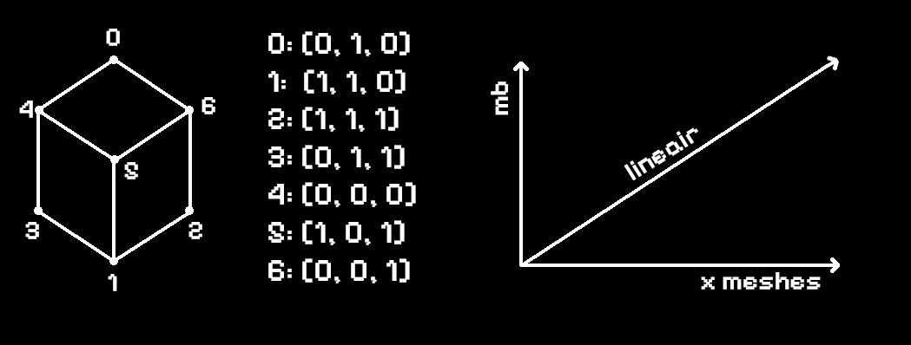
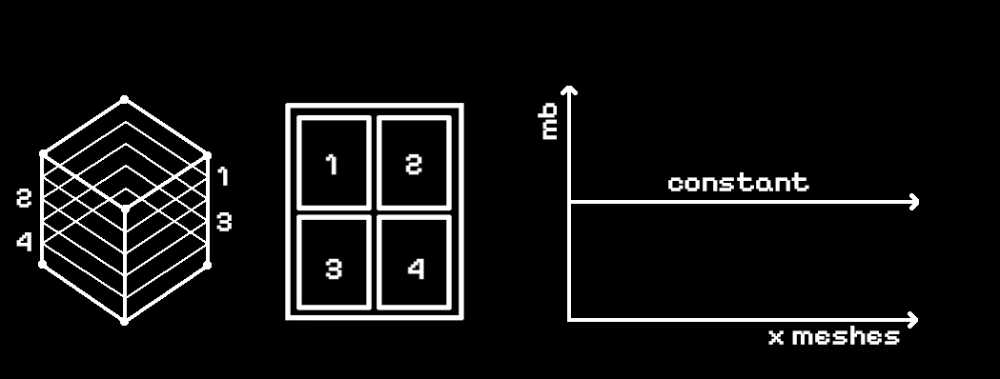

<div class="text_center_fullscreen">
  <div class="home_inner">
  <br>

  <div style="font-size:1.5em;">why?</div><br><br>

<p>We are spatial designers, architects, researchers, practitioners and academics... we LOVE 3D. But as a web archive? 3D has a big performance cap. There is a reason big collective 3D archives are not that common (platforms like <a href="https://sketchfab.com">Sketchfab</a> never load them all at once). They are unpredictable — one wrong model can break your performance. → 'A cited example of the focus on graphics was a flowerpot, which had as many polygons and lines of shader code as a player character.' (<a href="https://en.wikipedia.org/wiki/Final_Fantasy_XIV_(2010_video_game)">source</a>)</p> <br><br>

<p>When working with complex and detailed polygonal models or volumetric data, storing these datatypes can become very large. A single model can quickly reach 1 million <a href="https://en.wikipedia.org/wiki/Vertex_(computer_graphics)">vertices</a>.</p><br><br>


<p>Working with direct 3D models on the web is good because:</p> <br>
<p>- lots of detail, great quality and resolution<br>
- full control in 3 dimensions<br>
- precise texture and mapping control<br>
- wonderful for hero shots, where resolution is of key importance</p>
<br><br>
<p>Working with direct 3D models on the web is bad because:</p>
<br>
<p>- Models can quickly skyrocket in size. 50MB or more for a model is not uncommon, especially if you include other attributes like UVs (another vector for each prim), vertex color (another vector for each vertex), animation (let's not even get started here)... which, if you have many models, very quickly becomes unusable. The <a href="https://developer.valvesoftware.com/wiki/Draw_call">draw calls</a> would also become an issue over time if the geometries are not merged.</p>
<br><br>

<p>- Compression techniques such as <a href="https://github.com/google/draco">Draco</a> GLB compression do a good job at reducing this size, BUT the mesh still needs to be decompressed on the CPU before upload to the GPU. So VRAM footprint is unchanged — only the loading is faster (and <a href="https://en.wikipedia.org/wiki/Video_random-access_memory">VRAM</a> is a scarce and delicate resource when working on the web). Of course you can mitigate the polygon count with <a href="https://en.wikipedia.org/wiki/Polygon_mesh#Mesh_simplification">decimation algorithms</a>, but that also lowers the detail and is not easy to control properly.</p>
<br><br>

<p>- You didn't even load in the textures yet?? Another 10MB? These textures also need to be decoded on the CPU before being uploaded to the GPU. And when using common formats like <a href="https://en.wikipedia.org/wiki/WebP">WebP</a>, <a href="https://en.wikipedia.org/wiki/PNG">PNG</a>, <a href="https://en.wikipedia.org/wiki/JPEG">JPG</a>, the file size (e.g. 10MB) becomes 40MB (4 times!) of memory on the GPU, since they're stored as raw <a href="https://en.wikipedia.org/wiki/RGBA_color_model">RGBA</a> in VRAM.</p>
<br><br>

<p>- There is also the draw calls bottleneck. Before the GPU can render an object, the CPU must first prepare its 'state'. This involves binding the correct textures, <a href="https://en.wikipedia.org/wiki/Shader">shaders</a>, and materials to the object. The bottleneck occurs when hundreds of models are loaded into VRAM, but the GPU is forced to sit and wait for the CPU to issue individual rendering instructions for each one. This degrades performance a lot.</p>
<br><br>

<p>- While we can mitigate draw calls by merging geometries, sharing shaders, and combining textures into <a href="https://en.wikipedia.org/wiki/Texture_atlas">atlases</a>, doing so dynamically in the browser at runtime is computationally expensive and slow. It requires significant offline preparation and a dedicated pre-processing pipeline to combine these assets before they ever reach the web environment.</p>
<br><br>

<p>- Post operations are not possible. The pipeline is very set. When you want to change something, you have to adjust the 3D model itself, which is cumbersome and (for us lazy people) not future-proof and exhausting.</p>
<br><br>

<p>Overall, it comes down to this: it's very hard to scale and control is time-consuming. If we want a system that allows for many projects in 3D, we need to come up with a different approach.</p>
<br><br>

<p>What if we can make all of these objects become textures instead?</p><br><br>


<p>We fully skip all 3D vertices — just RGBA vectors, pixels.</p>
<br><br>

<p>Now we are:</p><br>
<p>- not constrained by vertex count, since we can slice 3D models of any vertex count onto the same resolution texture<br>
- able to use the <a href="https://www.khronos.org/ktx/">KTX2</a> format which stays GPU-compressed in VRAM (biggest win — sampled natively, no decoding needed!)</p>
<br><br>

<p>Even better: what if we store all images on big <a href="https://en.wikipedia.org/wiki/Texture_atlas">spritesheets</a> where we can pack 30+ models onto a single texture?</p>

<p>With this, we reach an amortized distribution of project count over total bytes. Meaning: adding more models does not necessarily add many more bytes, since the compression dominates the added pixel area.</p>
<br><br>
<p>Of course there are downsides. The most obvious one is that we are deliberately losing information. We are only working in 2 dimensions. But this is a sacrifice we have to make.</p>
<br><br>

<p>Full 2D control later. If you don't like it, paint over it! We have some internal tools that allow for quick or complex fixes. We can now also do 2D post-processing steps to produce another visual layer of information to projects (easy blend modes such as subtract, exclude, multiply with other images, easy 'booleans' by removing parts of the image, sharpening, dithering, compression, manual editing... it all becomes very easy and fun!)</p>
<br><br>

<p>The bad: initial memory cost is high. The initial load might exceed 20MB. But that's a sacrifice we have to make. That's why there is a simple <a href="https://en.wikipedia.org/wiki/Level_of_detail_(computer_graphics)">level-of-detail</a> system in place which loads the low-resolution spritesheets first. (That's why, on load, it looks very pixelated and low-resolution — the bigger spritesheets aren't loaded in yet.)</p>
<br><br>

<p>On a side note: the drawing has always been 2D — architecture's primary representation medium for 500+ years has been the plan, section, elevation. Flat sections.</p>
<br>
    <div style="font-size:1.5em;">how?</div>
    <br><br>
    <p>In a traditional 3D object pipeline, prims and points are uploaded. This means that geometric complexity scales with filesize.</p>
    <br><br>
    
    <br><br>
    <p>When processing 3D models through this stacking setup: filesize ≠ geometric detail.</p>
    <p>- only captures 1 dimension/section</p>
    <p>- more complex processing pipeline</p>
    <br><br>
    
    <br><br>
    <p>Limitations are memory and internet speed. But this is far more efficient than the linear approach.</p>
<br>
<br>

<div style="text-align:center;">
      <br>
      |<br>|<br>V
      <br><br><br>
</div>

  </div>
</div>